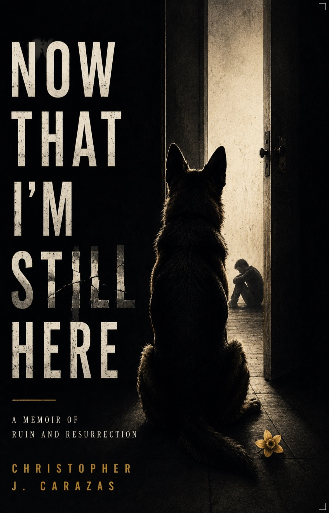
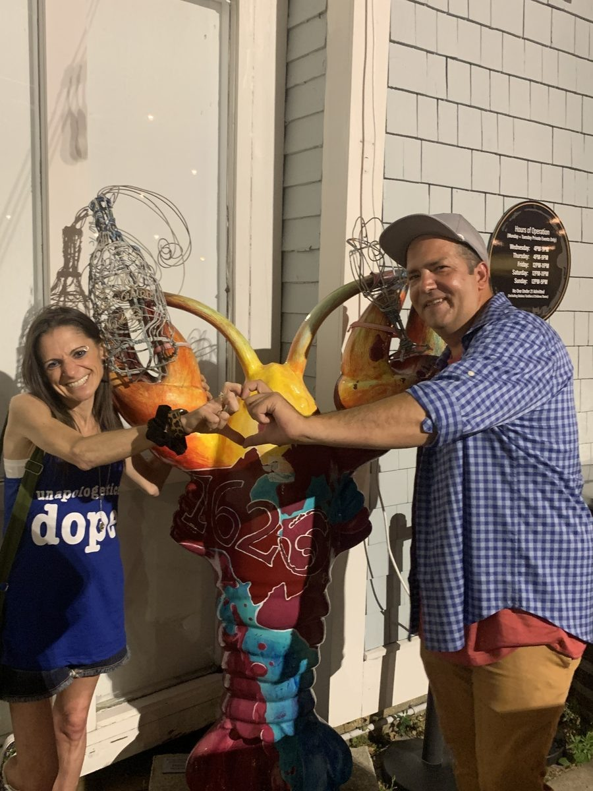
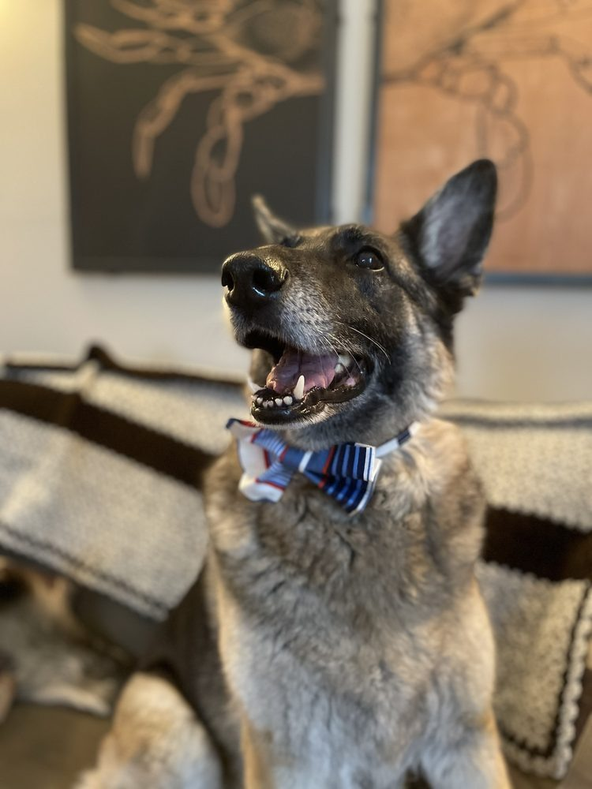
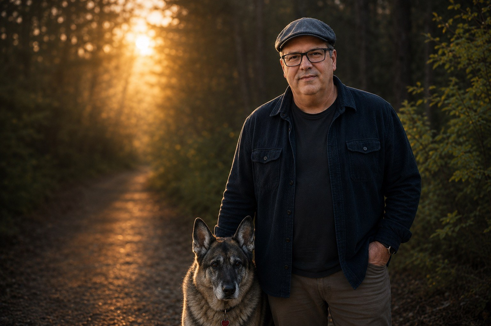

Jun 21, 2026
THE PLYMOUTH SENTINEL & CANINE GAZETTE: SUNDAY EDITION JUNE 21, 1886(ISH)
Land contested, airspace disputed, wildlife under investigation, and the Human producing only three essays before pleading workload.
Read this edition →Christopher Carazas · Author · Kingston, Massachusetts
I grew up autistic across five countries without knowing it, learning to become whoever each room required. Now That I’m Still Here is the story of what happened when that performance collapsed, and how grief, truth, and one stubborn German Shepherd helped me become visible again.
For anyone who learned to disappear in order to belong, and anyone trying to become visible again.

“This book helped me stay.”
A reader at a December book event
212
copies placed into readers’ hands
2,000
reader campaign goal
$6,000
in donations to 3 organizations
$18,000
in estimated social impact
First, I learned how to disappear.
The Memoir
About the Memoir
A Memoir of Ruin and Resurrection · Sentinel House Press
At a December book event, someone looked up at me and said four words: This helped me stay.
That is not a review. That is a hand reaching back through language. This is what you are holding.
Growing up autistic across five countries without knowing it — and finding out at forty, which is, I can confirm, a complicated Thursday.
A marriage built on quiet demolition — and the years it took to see it.
A diagnosis that arrived too late to undo the damage, just in time to explain it.
A German Shepherd who scratched at a basement door and changed everything.
The slow, stubborn, deeply unglamorous work of becoming a person again.
This memoir doesn’t offer a clean resolution. It offers something rarer: the honest version of what survival looks like before anyone turns it into an inspirational quote.
“Carazas writes like a man digging through ruins—with poetry, precision, and a quiet fury. Necessary literature.”
Simon Li
For readers of Matt Haig, Cheryl Strayed, and anyone who has ever sent “sounds good!” when absolutely nothing about it did.

Who This Memoir Is For
Reader Responses
These arrived by email, at book events, and late at night. Some people didn't say how they found the book. They just needed someone to know it found them.
Then a dog and a few impossible people kept the light on.

Why Katie Matters
There is a photograph of us wrestling a painted lobster the size of a small car outside a gallery in Plymouth. She is laughing. I cannot remember the last time before that I had laughed like that. I am glad we took it.
Katie came into my life after years of learning to survive by performing, anticipating, and making myself smaller. She did not ask for the polished version. She listened to the parts of my story I had learned to hide, and she believed me without making me earn that belief.
With her, love was not another test I could fail. She gave me a glimpse of what it felt like to be known without being managed, corrected, or translated into someone easier to understand. She made room for the whole person, including the frightened, complicated, unfinished parts.
“You didn’t arrive to rescue me. You arrived to see me. And you did.”
The book began with her
I started writing because I wanted Katie to understand how I had become the person she met. Those pages became the first shape of Now That I’m Still Here. This memoir would not exist without her. It began as an explanation offered to one person who made honesty feel possible, and became a story for anyone who has ever disappeared in order to belong.
She laughed like thunder and loved without making kindness feel conditional. She looked at the wreckage I had become and did not flinch. She showed me that broken things do not have to be repaired before they are worthy of tenderness.
The book carries her forward.
SHE SCRATCHED
AT THE DOOR.
THAT WAS ENOUGH.

PHOTO — SHADOW / PLYMOUTH, MA / BOW TIE: HER CHOICE
Resident Critic & Appointed Guardian
Shadow. German Shepherd. Madagascar-born. Editor-in-Chief. Unimpressed, but present.
Shadow has crossed oceans, interrupted breakdowns, supervised manuscripts, and maintained consistently low confidence in human leadership. She has more international travel experience than most diplomats and considerably better instincts about people. I should have asked her opinion sooner. I know this now.
In the memoir, she is not a symbol added after the fact. She is the heartbeat that stayed when everything else became conditional. When I could not imagine a future, she still expected breakfast. This is, I maintain, the most grounded therapeutic intervention I have ever received.
She now runs the Plymouth Sentinel and Canine Gazette, where she covers snack allocation, household governance, and my continued failure to meet basic institutional standards. Circulation is undisclosed. Subscription is not optional. I found this out the hard way.
Shadow did not consent to this website. She is aware of it. Her editorial notes were withheld on legal advice, and also because they were devastating.
Passports eaten: 1 · Breakdowns interrupted: unknown, she stopped counting · Manuscripts reviewed: all of them · Editorial notes accepted by The Human: zero · Regrets expressed: none
Published under the stern supervision of Miss Shadow
A periodical of record covering snack allocation, household governance, municipal wildlife, literary disturbances, and my continued failure to meet basic institutional standards.
Jun 21, 2026
Land contested, airspace disputed, wildlife under investigation, and the Human producing only three essays before pleading workload.
Read this edition →Jun 14, 2026
A weekly dispatch from the Realm, filed under the unquestionable authority of one senior German Shepherd with excellent ears.
Read this edition →Jun 7, 2026
Established whenever Miss Shadow first became suspicious, which archival records place at approximately five minutes after adoption.
Read this edition →
About Christopher
I once spent twenty minutes in a parking lot trying to decide if I was allowed to go inside. The event was mine. The building was open. I simply could not figure out which version of me was supposed to walk through the door. I have since written an entire book about that problem. Progress is real but incremental.
I am a memoirist, essayist, and social-impact analyst whose work explores autism, identity, grief, belonging, and the strange administrative burden of becoming a person again.
I grew up across Bolivia, Ghana, Paraguay, Ecuador, and the United States. As an adult, my work and life took me to Switzerland, Oman, Madagascar, and Turkey. Five countries became nine. That upbringing taught me languages, adaptability, and how to enter a room already scanning for the version of myself most likely to be accepted.
I was diagnosed autistic in adulthood. My memoir, Now That I'm Still Here, traces the collapse that followed, the truths that surfaced, and the people and animals who helped me rebuild.
Survival is not the ending. It is the inconvenient beginning of everything that comes next.
I live in Kingston with Shadow, my German Shepherd, editor, and senior compliance officer. On Substack, I write about the morning after the emergency, the kindness you do not trust yet, and the strange work of becoming recognizable to yourself again.
From the Writing Desk
On Substack, I write about the part after survival, when everyone expects a triumphant montage and instead you are standing in a kitchen wondering whether toast counts as recovery.
The essays move through autism, grief, psychological abuse, belonging, work, identity, and the stubborn business of becoming recognizable to yourself again. Shadow contributes periodic audits of human competence. Her findings are rarely encouraging.
Jun 20, 2026
On the hour when everything you have been carrying finally puts itself down, then wakes you to discuss it without an appointment.
Read the essay →Jun 18, 2026
A darkly funny essay about trauma, recovery, employment gaps, hidden costs, and learning which debts were never yours to pay.
Read the essay →Jun 16, 2026
On the instinct I ignored, the decade it witnessed, and the one second I still owed myself.
Read the essay →Staying became a story. The story became a responsibility.
The Road to 2,000
When 2,000 copies of Now That I’m Still Here are sold, $6,000 will be donated across three organizations supporting suicide prevention, autism services, and eating-disorder recovery. Based on the campaign’s current social-value assumptions, those donations are estimated to generate approximately $18,000 in social impact.
A reader once told me, “This book helped me stay.” After that, selling the book could no longer be only about selling the book.
Social Return on Investment
Research on mental-health interventions often finds that each dollar invested can create several dollars in social value through avoided costs, restored participation, and improved wellbeing. The exact return depends on the program, so the final campaign report will publish the assumptions rather than decorating them with confidence they have not earned.
This is not for people who want a story that ends clean. It is for people who know that staying is not the same as winning, and that sometimes staying is the whole victory.
Join the Road to 2,000Each marker shows the cumulative charitable commitment as the readership grows. The full $6,000 is released at 2,000 copies.
Live & In Person
NOTHING
YET.
Which is either a tragedy or an opportunity, depending on whether you count sitting with a German Shepherd at 2am thinking about sentences as an event. Shadow counts it. She attends every time.
All upcoming events are posted to Facebook first. The link below always shows what’s current.
Want to host an event?
Christopher is available for readings, panels, author conversations, and neurodivergent community events.
Get in TouchPodcast Conversations
Podcast Interviews with Christopher Carazas
Podcasts are what happens when someone hands me a microphone and politely assumes I will answer one question at a time. I rarely do.
These conversations move through late-diagnosed autism, masking, psychological abuse, grief, writing, social impact, and the stubborn mechanics of staying. Start anywhere. The story has a habit of finding the same room from different doors.
Frequently Asked Questions
It is Christopher Carazas’s memoir about growing up autistic across five countries without knowing it, surviving psychological abuse and profound grief, and rebuilding a life with help from Shadow, his German Shepherd. Read more about the memoir.
You can buy directly from Christopher through Lulu, or use the retailer link for other stores and formats.
Now That I’m Still Here is available worldwide and wherever books are sold, including major online retailers, independent bookstores that can order it, and direct through Lulu.
The Road to 2,000 is a campaign to place the memoir with 2,000 readers, generate $6,000 in donations across three organizations, and create an estimated $18,000 in social impact. See the campaign and impact ledger.
Christopher publishes essays about autism, grief, identity, survival, and belonging on Substack. Explore the latest writing.
It is a recurring satirical newspaper edited, in spirit and possibly by force, by Shadow. It blends local life, canine investigations, and human incompetence. Read the Gazette.
Yes. Christopher speaks about late-diagnosed autism, psychological abuse, grief, writing, social impact, and survival. Listen to previous conversations or email ccarazaswrites@gmail.com.
Read it for yourself. Send it to someone rebuilding. Help take the Road to 2,000 one reader farther.
Shadow would like it noted that all shipping delays remain a human failure.